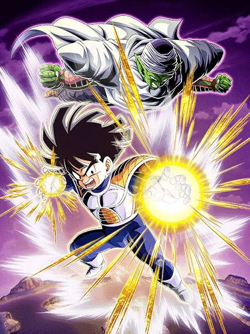

NÃO espere pra trocar pro Piccolo.
Se esse cara tiver um aliado Planet Namek Saga ou Namekians no turno e estiver no slot 1, ele tem 80% de redução de dano e chance de crítico por 3 turnos
Sabe oq acontece depois desses 3 turnos? Exatamente, morte.
Pra trocar pro Piccolo você precisa estar abaixo de 70% de HP a partir do turno 4 ou só a partir do turno 6
Faça o possível e o impossível pra trocar o mais rápido possível, pq se não der, você se ferra

Agora sim ele é forte.
Esse cara tem 50% de redução de dano e chance de crítico pra sempre, além de lançar um adicional com 70% de chance de ser Super
Se ele estiver abaixo de 70% de HP no começo do turno, ele ganha 50% de chance de desvio pro resto da luta, o que é bem forte
E se estiver acima de 70%, ganha +20% de redução de dano e dá 70% de DEF pra todos aliados Super Class
Por sinal, ambos Gohan e Piccolo stackam 20% de ATK e DEF no Super Attack, o que é legal mas é um stack meio lento
Em geral, um LR decente, mas bem perigoso no começo da luta
Assim que trocar pro Piccolo, tá tudo certo, bom card.